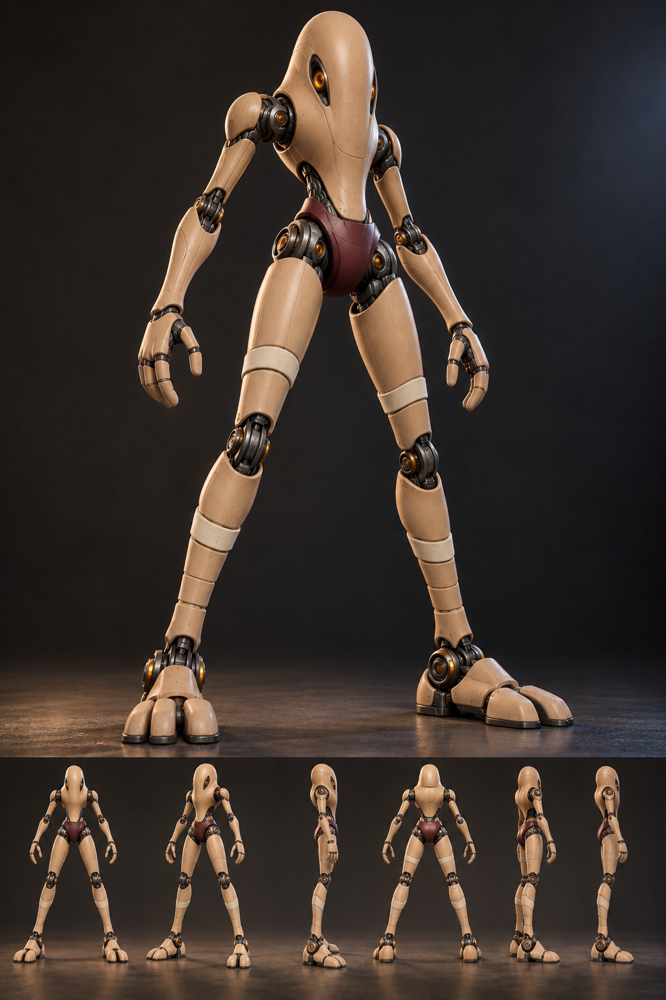
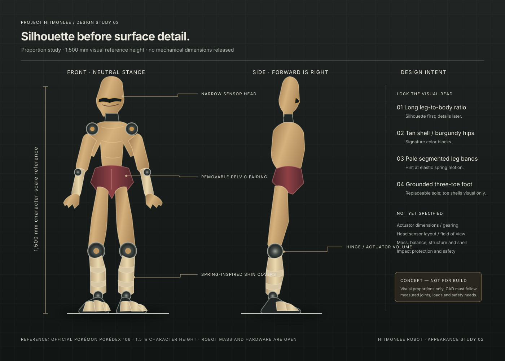

A visual direction for a real robot: preserve the unmistakable long-leg silhouette and tan / burgundy color blocks, then let precise mechanical joints show where the character has to move. This is industrial-design concept art, not a CAD release or a claim that the current simulator has these parts.
Concept only · mechanics remain provisional

Iteration 01 follows the first armored exploration, concept 00. The views are useful for silhouette discussion; dimensions, symmetry and hidden mechanisms must be rebuilt parametrically.

Editable vector silhouette study to make the visual decisions reviewable at scale. The 1.5 m reference is from the official character Pokédex entry; the silhouette is a visual estimate and does not supersede the robot envelope.
What should survive every design iteration
Read from across the roomA tall, tapered head; compact torso; extremely long, spring-like legs. The leg-to-body ratio matters more than surface detail.
Character color blockingWarm ochre body and burgundy hip / shorts mass. Keep the articulation dark and visually subordinate.
Personality through postureGrounded three-toe feet and relaxed arms suggest a martial artist. A neutral display pose must still look balanced.
Pokémon's official Pokédex lists Hitmonlee at 1.5 m and describes control of its leg ligaments to extend or contract kick reach. Use those as appearance and motion references, not as robot mass or mechanism specifications.
Translate the drawing into hardware
Head cowl: a narrow removable shell around camera, status light, and service access. No facial expression is assumed.
Torso shell: thin, non-structural fairing over a load-bearing spine. Keep shoulder and hip service paths clear.
Burgundy hip volume: pelvic fairing around the hip drive mounts; split into removable left/right service panels rather than a solid short.
Long legs: retain uninterrupted thigh and shank length. Design shells around actuator and linkage envelopes instead of adding decorative stacked rings.
Feet: broad replaceable contact soles with a compliant insert. Their final size and friction must follow the balance and contact study.
Color and finish study
Sand ceramic shell
Burgundy pelvic shell
Graphite joint housings
Brushed titanium details
Amber status light
Use matte, replaceable shells for the colored surfaces; reserve metal for small structural details and bearing interfaces. The palette in the render is a starting point, not a material specification.
What this render gets wrong / leaves open
Even after reduction, the head remains too large and smoothly ovoid; the next pass should better match the narrow, tapered profile.
The luminous eye reads more like a camera aperture than the character's simple eyes. Keep any optics restrained and integrated.
Some band segments and exposed rotary joints still interrupt the long leg. Refine the rhythm and assess impact protection, pinch hazards, service access, and dust ingress.
Hand shape, shell thickness, foot sole, camera window, head proportions, and joint axis offsets have no engineering dimensions.
Keep both images as silhouette and material references only. Reconstruct the accepted design in CAD rather than tracing pixels.
Connection to the current model
The training MJCF is a 2D sagittal mechanics skeleton: root, torso, six leg joints, feet, sensors and a head-camera frame. It intentionally has no arms or character shell. The camera frame is already near the top of the body, so a head package can be explored later without changing what the current policy observes.
Do not add decorative collision geometry to the training model. Keep appearance meshes, collision shapes, and mass / inertia authority separate. A future 3D visual model can share semantic frame names with the calibrated MJCF, with a report comparing transforms and dimensions.
Before detailed CAD: reconcile the earlier 1.2–1.4 m build-plan envelope with the character's official 1.5 m height; draft front and side silhouettes at the chosen scale; reserve volume for actual motor, gearbox, and bearing candidates; then check mass, center of mass, joint range, shell removability, and foot contact. Do not carry over the character's 49.8 kg listed weight as a robot target. Keep the tapered head and spring-leg silhouette while letting measured actuator geometry determine the mechanisms.
Generated with the built-in image generation tool. Both image iterations and the exact current prompt are in the project assets.